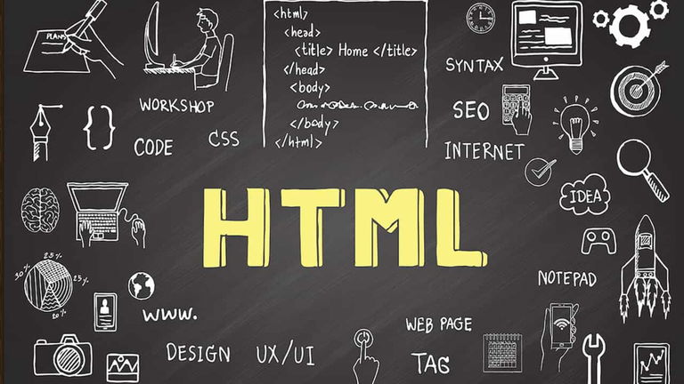
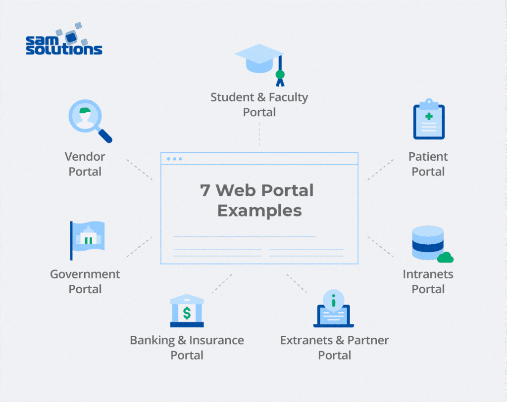

¿Qué es HTML?
HTML, o Lenguaje de Marcado de Hipertexto, es el estándar para crear páginas web. Permite estructurar contenido mediante elementos como encabezados, párrafos, imágenes y enlaces.

Beneficios de HTML
- Fácil de aprender y usar.
- Compatible con todos los navegadores modernos.
- Base para el desarrollo de aplicaciones web.
¿Dónde se utilizan las páginas web?
Las páginas web se utilizan en múltiples contextos, como:
- Sitios informativos (noticias, blogs).
- E-commerce (tiendas en línea).
- Aplicaciones empresariales.

Diferencias entre Páginas Estáticas, Dinámicas y Portales Web
Páginas Estáticas
Su contenido no cambia, como los sitios informativos simples.
Páginas Dinámicas
Interactúan con bases de datos para mostrar contenido personalizado, como redes sociales.
Portales Web
Plataformas que integran diversos servicios, como correo, noticias y comercio electrónico (ej., Yahoo, Google).
